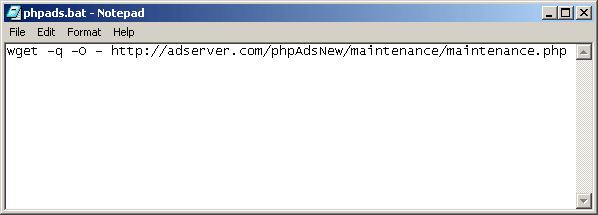
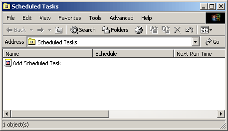
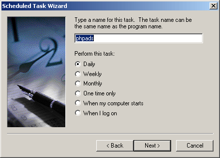
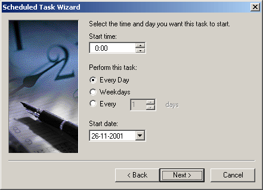
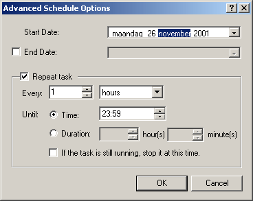

|
If you are using a Microsoft Windows 2000 based server you can use the
'Scheduled Tasks' to automatically run the maintenance file. However there
is no standard tool available to actually run the maintenance file.
Downloading wget
The first thing to do is to download wget, which is a command line to
get the contents of a file stored on a webserver. Wget is available for
all kinds of operating systems, including Windows. The Windows version
of wget can be found at: http://www.interlog.com/~tcharron/wgetwin.html
After you have downloaded the zip file you need to copy the wget.exe file
to the directory where Windows is installed.
Creating a batch file
The next step is creating a small batch file which call the wget utility
with the correct parameters.
This file can be executed as a Scheduled Task later on. You can use Notepad
to create a new file and add the information below, then save the file
as phpads.bat. You can save the file anywhere you like, but it
is wise to keep it in a location that isn't going to change, and isn't
accessible by the webserver.
Also make sure to use specify the correct url inside the batch file, the
url below is just an example.

Creating the scheduled task
The next step would be to actually add a new Scheduled Task. You can find
all Scheduled Tasks inside a directory inside the Control Panel.

Now click on Add Scheduled Task. The wizard will begin and after
you click on Next it will ask you for the program to run. Just
click on Browse... and select the batch file you just created.
Now you need to give this Scheduled Task a name and select to perform
this task daily.

Click on Next and set the Start time to 0:00 and choose to perform
this task every day.
If you click Next the wizard will ask you for your username and
password.

Make sure to select Open advanced properties..., because you will
need to
make some modification to this task. Now click on Finish.

To make sure this task runs hourly you will need to go to the Schedule
tab and select the Advanced... button. Now check Repeat task
and make sure the task is repeated every hour.
Also select the radio button Time and set the value to 23:59.
Now click OK to close this dialogbox and click Apply to
save all settings.

|